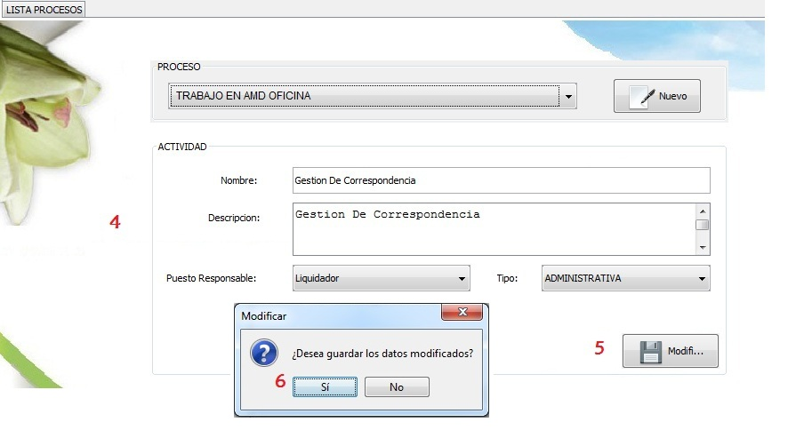

|
Para eliminar una actividad, previamente debe haber ingresado al modulo Procesos del menu que esta situado en
la parte izquierda de la pantalla y haber seleccionado el item Lista Procesos Seguidamente
1. Seleccionar el proceso del cual desea editar su actividad correspondiente
2. Seleccionar de la tabla la, actividad que desea editar
3. Presionar el botón Editar, el sistema cargara una ventana en la que se mostraran la información de dicha actividad,
|  |
4. Editar la información que desee y,
5. Presionar botón Modificar.
6. El sistema presentara un mensaje de confirmación de si el usuario desea o no modificara la información